This guide on more advanced Eagle board design tools and techniques.
Before you get started, make sure you have downloaded gone through the Eagle Setup and Eagle Board Design - 1 tutorials.
You can run (almost) any command on one part, or a group of parts. Like, for example, the ROTATE or RIPUP commands.
Eagle has a strange way of letting you do this. There are a few clicks involved, but it always goes like this:
Here is that process, in a sequence of pictures
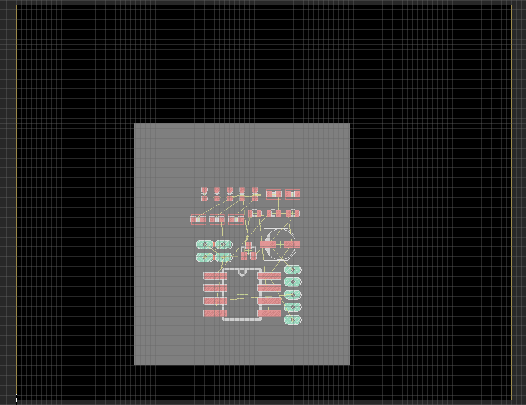 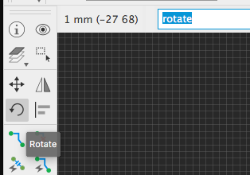 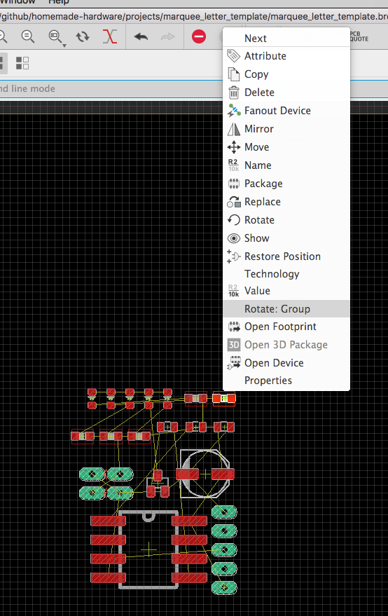 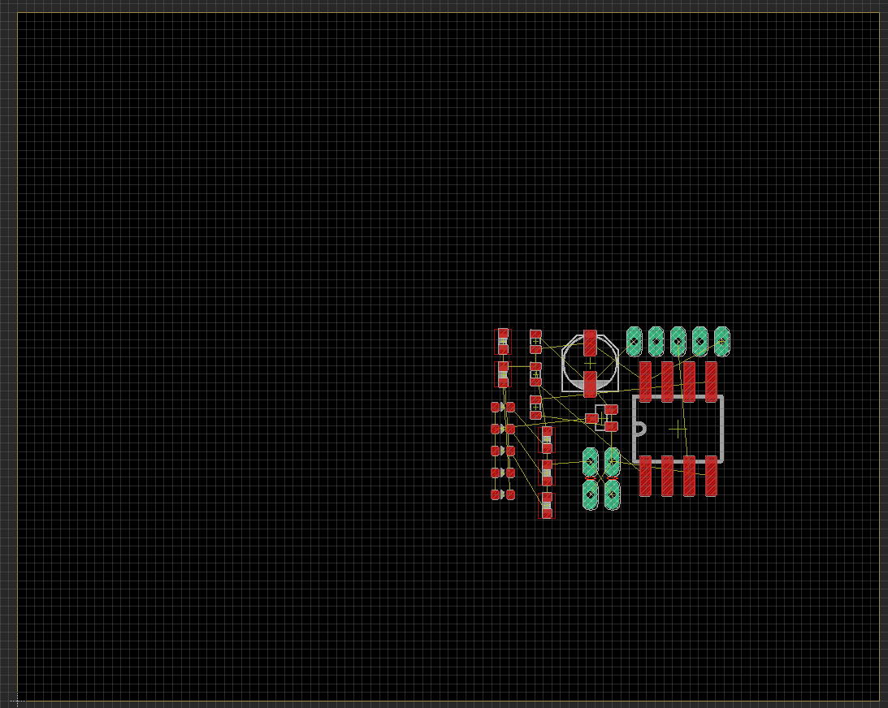Everything in the board editor (lines, routes, holes, etc.) has many "properties". Some properties are, for example, the X and Y position on the PCB, or if it's a line the width, or the drill size of a hole.
You can view all the properties something in your design using the INFO command. Select the command, and click the a part's origin on your board.
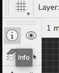You will be shown a window containing all that part's properties.
Here you can also update some of these properites, like the XY position or the angle of rotation.
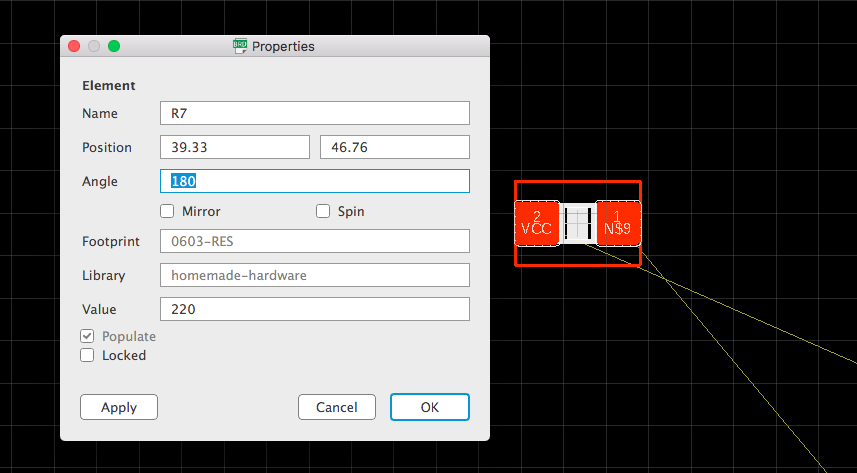If you use the INFO command on a line or route, you will be shown the width of that line
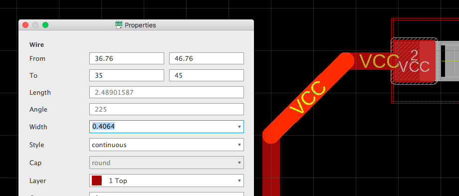By default, all parts will be on the top side of the board. However, you can move a part to the bottom too (cool!).
All parts have an option to "Mirror" them. If a part is mirrored, then it is on the bottom of the PCB. If not mirrored, then it is on the bottom.
Use the INFO command on a part, and in the Properties window you will see a checkbox for Mirror
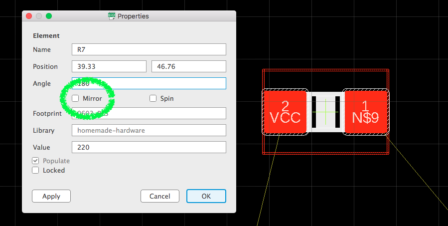Click the checkbox, and the part will now be "mirrored" and flipped over to the bottom side of the PCB.
Because it is an SMD part, it's pads will turn from red to now blue (because it's copper pads or on the blue 16 Bottom layer now)
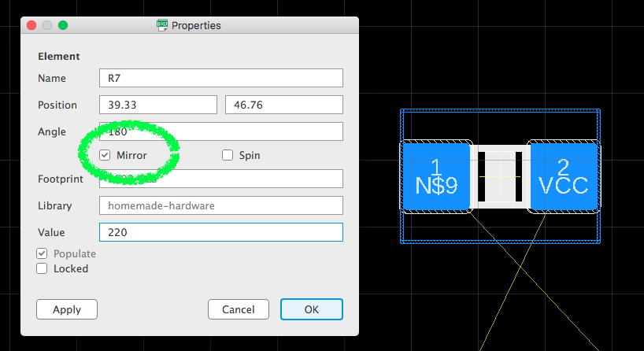Through-hole (DIP) parts have green copper pads on the 17 Pads layer, so they are more difficult to tell if they are mirrored or not.
In order to tell if a through-hole part is mirrored, you must use the INFO command and see if "Mirror" is checked or not.
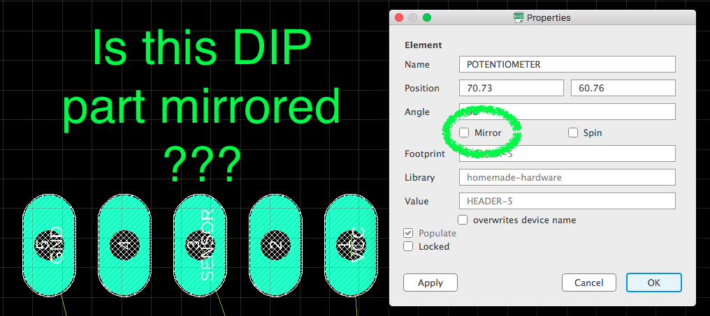This is very important, because if a part is mirrored and you do not know, then you might assemble it wrong and the circuit won't work.
If you want, you could have the entire PCB holding parts and traces on the bottom. Here is a picture showing all parts mirroed, and all traces on the bottom layer.
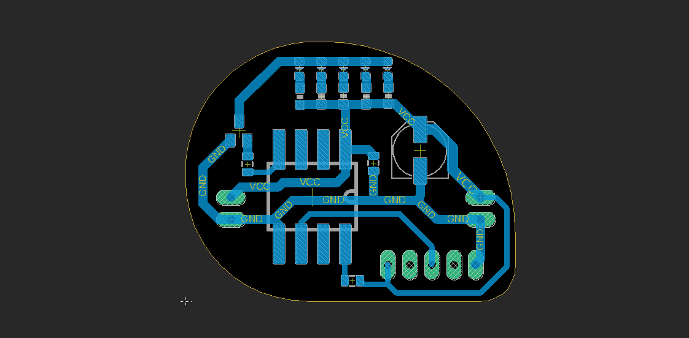Ground is a very popular connection on all PCBs. Many parts need to touch it, and it is probably the most important connection.
Because of how important ground (GND) is, PCBs usually create what's called a "Ground Plane". This means that empty space in the PCB will be "filled" with copper that touches GND.
Look at the two pictures below. The top one does not use a ground plane:
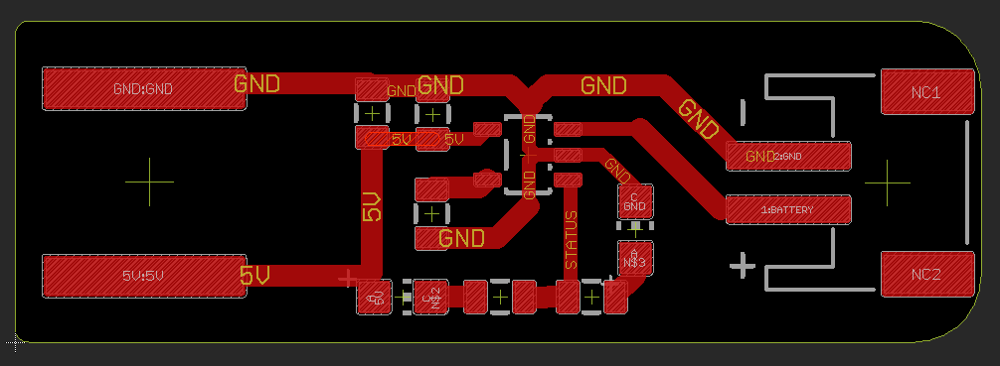And this next picture does use a ground plane:
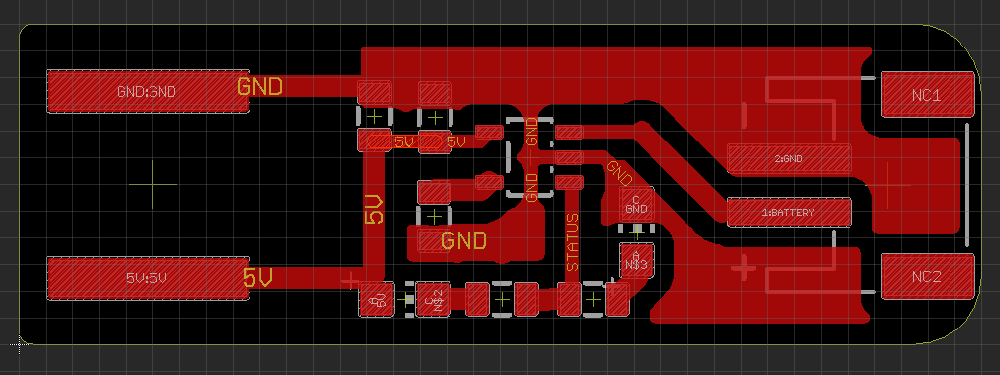A ground plane is made from a POLYGON, which is a completed shape that fills itself in.
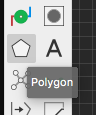Because the starting coordinate of the polygon must be the exact same coordinate as the last, I'm going to set my grid to be 2 millimeters. That's big enough that it's not hard for me to click the same point.
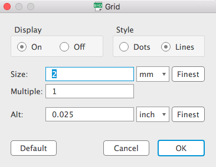Now, use the POLYGON tool to draw a square around your design. You want the polygon to be bigger than the cutout of your PCB (layer 20 Dimension)
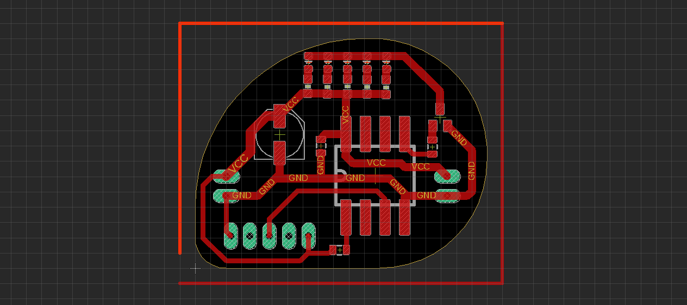Once you complete the polygon, Eagle will automatically show you a window which asks you to give a name to the polygon.
Since we are creating a ground plane, we want to give it the same name as the ground connection in our schematic: GND
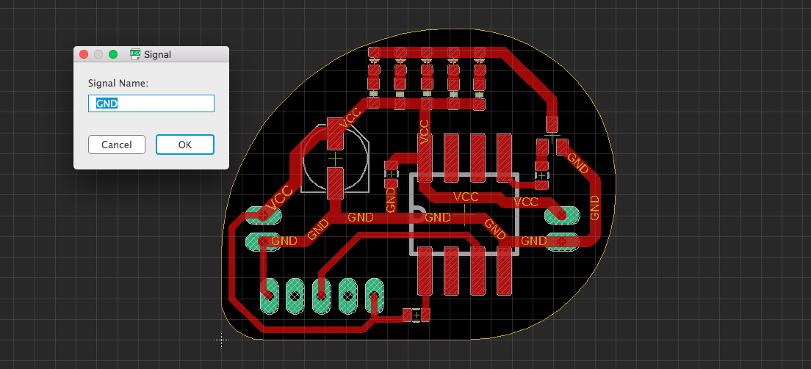When you save the name, the screen now shows a dotted line going around the entire PCB. That is the polygon.
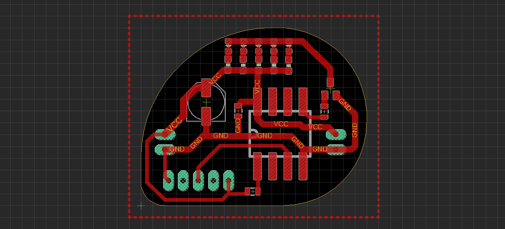Before we make the ground plane, first let's get rid of all those GND routes I drew before. Because the ground plane will replace all those GND routes, we can just get rid of them.
In the command input, type ripup gnd and press ENTER.
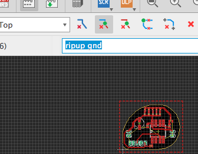This will "ripup" all the routes that have the name GND, and now shows those thin yellow "unrouted" lines.
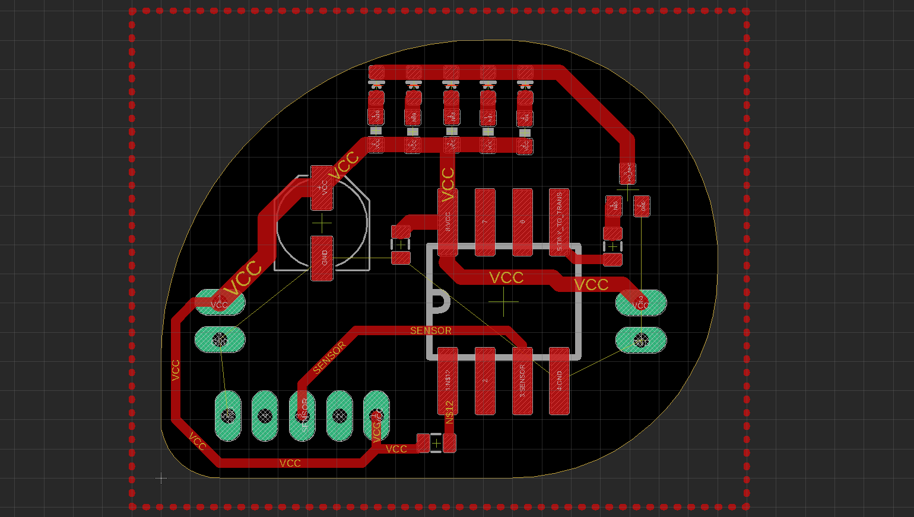Now, the exciting part!
Run the command RATSNEST, and the ground plane will be created from the polygon.
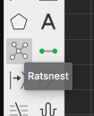The copper touching ground (GND) will now spread out and fill in empty areas.
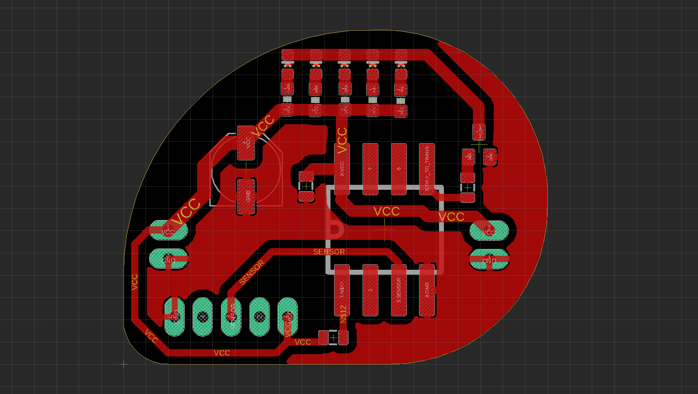There are a few important option on the ground plane, which you can change by using the (INFO command and clicking one of the polygon's sides.
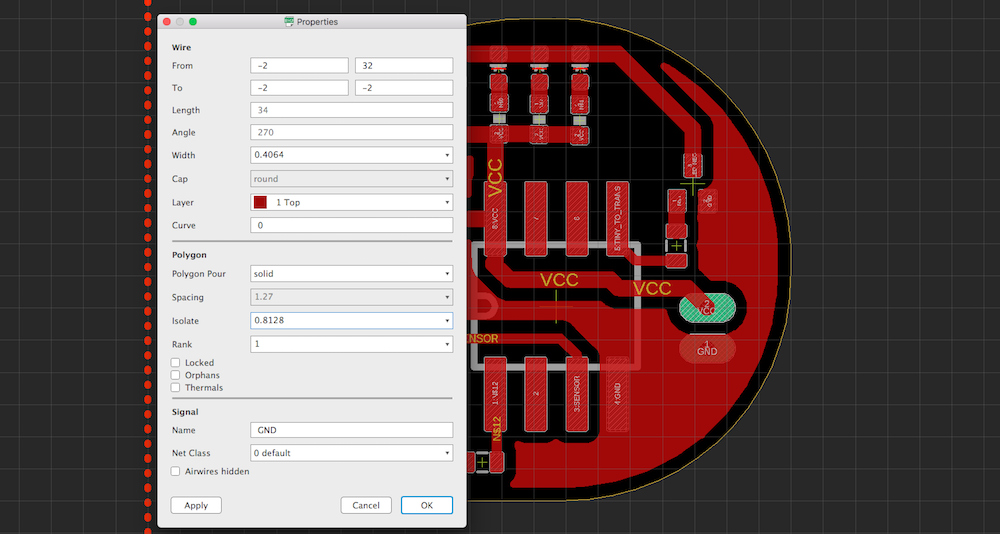The "width" amount will set the minimum width that the polygon will create, in order to try and fit between things.
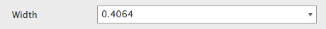The "isolate" amount will set the distance that the copper plane will use to stay away from other pieces of copper.
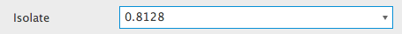The "thermals" checkbox will turn ON/OFF a feature that creates tiny traces around pads. I recommend turning "thermals" OFF, because that is how the Bantam mill will create it.
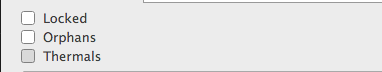Below is a picture showing the ground plane with "thermals" OFF.
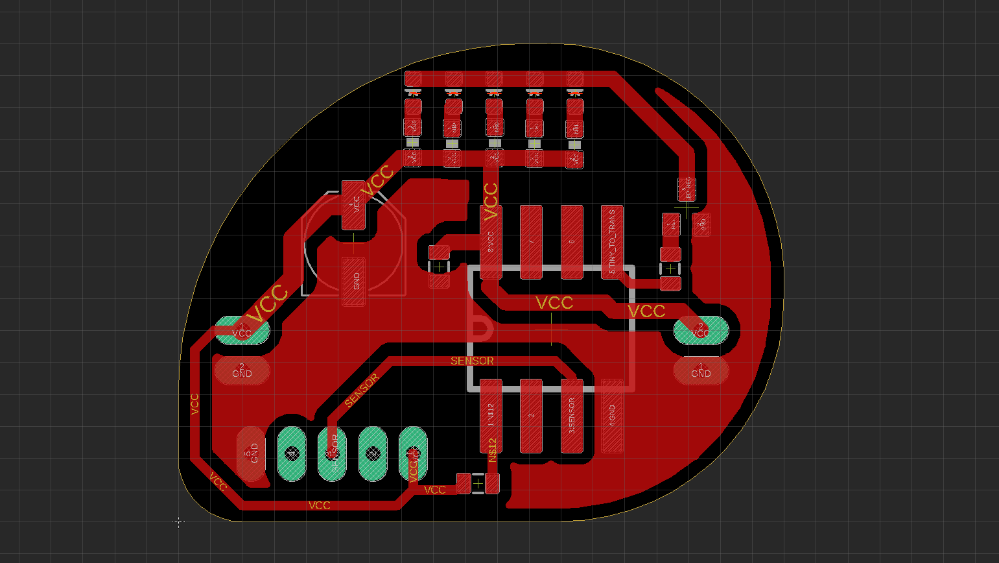The image below has covered some of the tool icons I do not think are useful (or I don't understand how to use it). What is left uncovered are the core commands when designing a board layout.
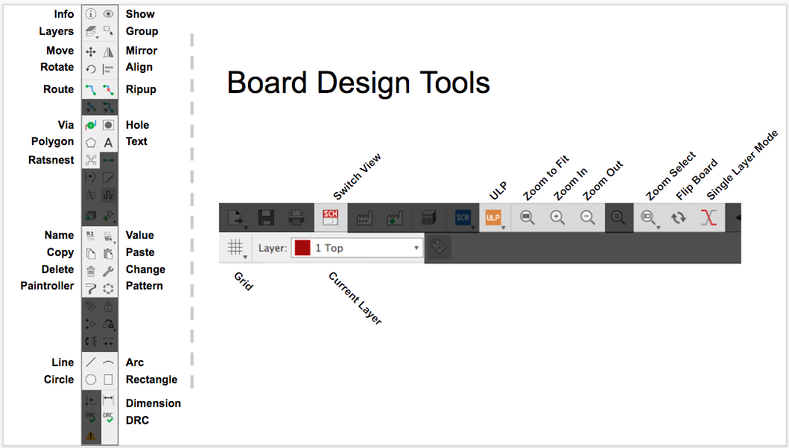This guide will not be covering all these commands, that would be too long. However, here's a quick description of some of my favorites:
Highlight a part or connection, both on the schematic and board editors. If you click a part or connection, it will highlight it in both schemat and board editors.
You can also type the command to get some more features. If you enter "show gnd", it will highlight the ground routes. If you enter "show c1", it will highlight the capacitor named C1.
Creates a hole in your PCB. This is different from a pad or via, because a hole does not have copper going through it. These are usually for creating holes for mounting screws.
Write some text, and place it anywhere you want.
Change a property of an object, without having to open it's "Properities" window.
For example, to change with width of a route to 1 millimeter, you can enter the command "change width 1.0", press ENTER, and finally click that route. The route will now be 1 millimeter wide.
Copy multiple properties at once, from one part/connection to the other.
Draw dimensional labels, helpful for showing the size of something.
{kind=link}